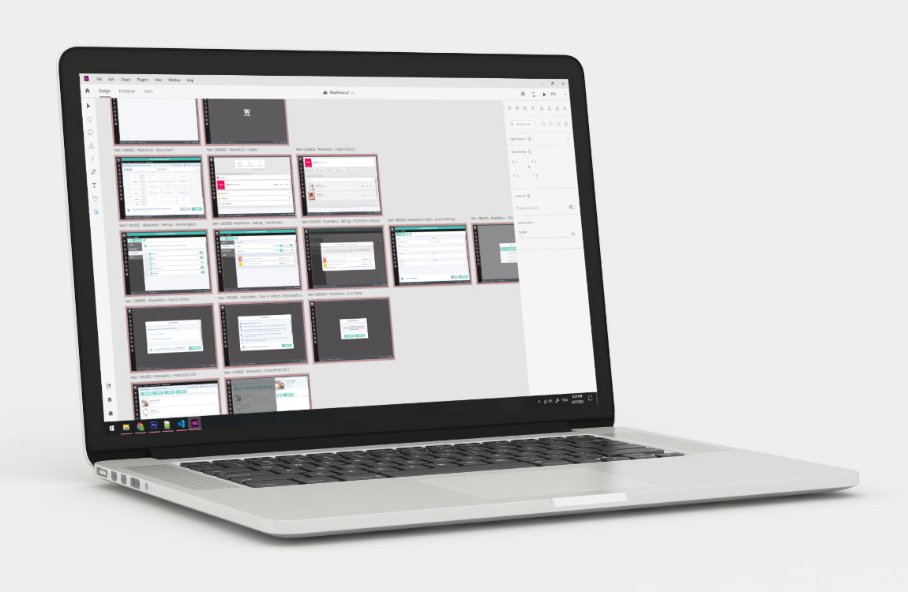
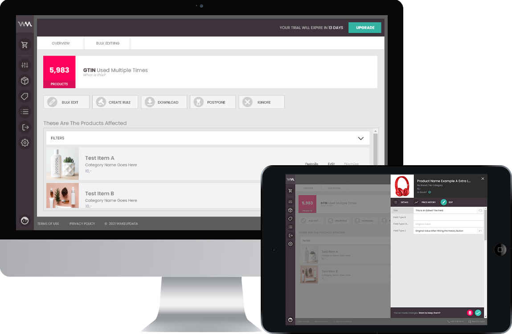

Designing the systems that keep enterprise products consistent at scale.
I'm Tristan — a product designer with a software-engineering background, with 10+ years experience building design systems, complex workflows, and B2B platforms for teams in Australia, the Netherlands, and Denmark.
Turning complexity into clarity
From enterprise data platforms to field surveyors with no time to spare — the common thread is taking something complex and making it usable.

Bringing consistency to a multi-product enterprise platform
Driving design-system strategy across PXDC, a multi-product enterprise platform for managing and distributing product experience data at scale.
Current role · 2022–Present Read the summary →
WiseMetrics: A clearer way to improve Google Shopping feed performance
Designed and helped build a standalone product that gives e-commerce merchants specific, actionable suggestions to improve their Google Shopping feeds.
Customers saw ROI gains of up to 10x Read the case study →
Roames Review — replacing paper logbooks with a guided digital workflow
Designed a job-based inspection tool that let power-network surveyors verify and report faults digitally, with a dark mode built in from day one.
Saved Ergon Energy millions in inspection costs Read the case study →10 years, a journey in engineering and design
Stibo Systems · Senior Product Designer DK
Own product design for Product Onboarding and Product Data Syndication on the PXDC platform. Drive cross-product design-system strategy and explore AI-assisted design workflows.
Stibo Systems · Product Designer DK
Led design for Enhanced Content, enabling scalable below-the-fold content for retailer product pages (e.g. Amazon). Helped lay the foundations of PXDC's design system.
Spillehallen · UX Lead DK
Directed UX strategy for digital gaming products, balancing creative vision with technical feasibility across research and interaction design.
WakeupData (acquired by Channable) · UX Lead & Front End Developer DK
Shaped the UX and front-end architecture of a B2B SaaS platform for product feed management, including the standalone WiseMetrics product.
Fugro · UX Lead & Front End Developer NL
Delivered UX and WebGL solutions for EMEA innovation-centre projects — interactive applications and prototypes for data visualisation and operational workflows.
Fugro ROAMES · UX Lead & Unity Developer AU
Designed and built interactive Unity and web applications for spatial infrastructure, including Roames Review. Progressed from junior engineer to UX-focused designer.